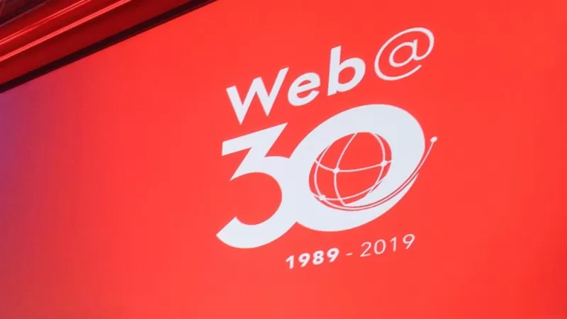

Первые среди ранних
- Первый в мире вебсайт появился в ЦЕРН в Швейцарии, сайт доступен до сих пор: он начал работу 6 августа 1991 года.
- Первую веб-камеру подключили в том же 1991 году в компьютерной лаборатории Кембриджского университета. Её единственной целью было наблюдение за отдельной кофеваркой - нельзя же дать кофе убежать!
- Слово "веб-сёрфинг" придумала ещё в 1992 году нью-йоркская библиотекарь Джин Армор Полли, впоследствии написавшая серию книг по безопасности в сфере интернет-услуг.
- Первой в мире страной, где доступ в интернет постулируется прописанным в законе правом, стала Финляндия: там это произошло в 2010 году.
- На первом ролике, загруженном в Youtube, основатель видеоплатформы и один из разработчиков PayPal Джавед Карим изучает слонов в зоопарке.
Самые большие
- Физически больше всего пользователей интернета - предсказуемо - в Китае - около 800 миллионов человек, и это только примерно 60% населения страны.
- Самый большой вебсайт по объему трафика - Netflix: он съедает почти 15% мировой передачи данных.
- По данным за прошлый год, самый быстрый интернет в Европе - в Исландии: его скорость составляет 150 мегабит в секунду.
- Ряд источников утверждает, что почти 80% фотографий в сети - изображения обнажённых женщин. Подтвердить или опровергнуть эту информацию крайне непросто.
Цифры, цифры...
- Какое количество людей на планете имеет подключение к сети? 4,05 млрд из примерно 7 миллиардов жителей планеты. При этом в Эритрее меньше 1% населения имеют выход в сеть.
- 51% трафика генерируют боты, а не реальные люди и сайты.
- Интернет охраняют семь реальных человек - у каждого ключ, который позволяет перезапустить мировую сеть в случае его захвата или технологической катастрофы.
- Главная инфраструктура мировой сети - 300 подводных кабелей, соединяющих континенты. Обрыв одного из них может оставить без связи десятки миллионов человек.
Взрыв мозга
Каждый файл, загруженный из интернета, делает устройство немного тяжелее: если доверять расчетам Калифорнийского университета в Беркли, весь интернет со всем его цифровым содержимым весит 50 граммов. Это сложно представить, но одна минута времени эквивалентна 87 тыс. часов просмотра визуального контента на Netflix и 400 часам загрузки видео на Youtube. За ту же минуту в приложении знакомств Tinder "свайпают вправо" - иными словами, соединяются - 18 тысяч пар. Согласно исследованию Statistic Brain, размер доходов, получаемых сайтами знакомств, составляет более миллиарда долларов в год. Изобретателем интернета называют Тима Бернерса-Ли, который выступает за его государственное регулирование и разработку Сетевого кодекса, с помощью которого пользователи могли бы осуществлять контроль за сетевой нейтральностью.
